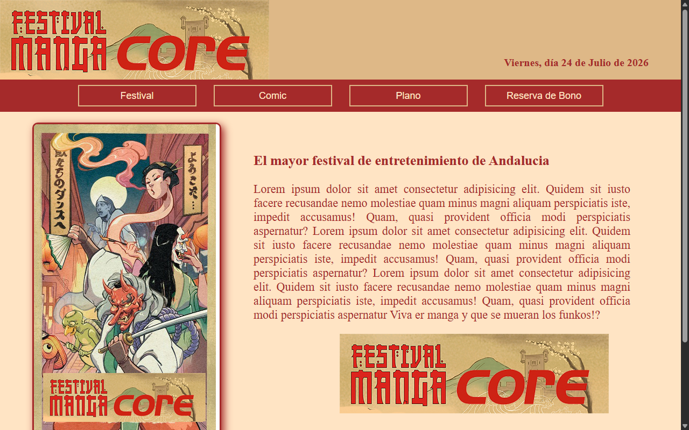

Captura próximamente
Destacado
Manga-festival-Web
Web para festival de manga: validación de datos y navegación multipágina.
Ver en GitHubPG Dev full stack
Pág. 01/11 FADE IN
INT. WEB — DÍA
Esta no es una web que se lee de arriba abajo. Es un guión: avanzas escena a escena.
Antes escribía historias. Ahora las construyo en código.
ESCENA 03 · SEVILLA
Formación full stack: frontend, backend, bases de datos y despliegue.
Busco prácticas del módulo superior. Si tienes empresa o conoces a alguien — hablemos.
ESCENA 04 · FORMACIÓN
Curso del paro que abrió la puerta a prácticas en empresa.
ESCENA 05 · PRÁCTICAS

WordPress · SEO · UX — prácticas del curso del paro, no del módulo DAW.
ESCENA 06 · IRLANDA
Donde resido durante la beca
Sede Fluid Financial · remoto
ESCENA 07 · MAPA
Click en un punto — el scroll se queda aquí. Usa ← → para seguir.

Mapa © Wikimedia Commons (CC BY-SA 4.0)
ESCENA 08
Pasé del guión al código. Antes escribía historias; ahora las construyo.
Por el camino trabajé en Lisboa, donde empecé a enamorarme de la programación; aprendí inglés en Irlanda y, de regreso a Sevilla, lideré un equipo en atención al cliente del sector aéreo.
Soy desarrollador full stack con formación DAW. Actualmente otra vez en Irlanda con una beca Erasmus+ de la Unión Europea.
No estoy empezando de cero: estoy cambiando de escenario. Y visto lo visto, en este sector voy a seguir aprendiendo el resto de la vida.
ESCENA 09
Todo público, sin login. github.com/Sarajesko →

Destacado
Web para festival de manga: validación de datos y navegación multipágina.
Ver en GitHub
Ejercicio de validación de formularios en PHP.
Ver en GitHub
Ejercicio de validación — entrega evaluable DAW.
Ver en GitHubESCENA 10
Lo que uso en DAW, en la beca Erasmus+ y en Multiplicalia.
Formación DAW · Certificado IFCD0110 (9,04) · Inglés
ESCENA 11 · CONTACTO
¿Prácticas DAW? ¿Colaboración? Escríbeme.